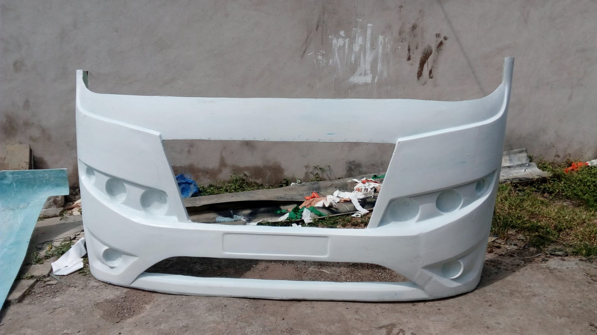
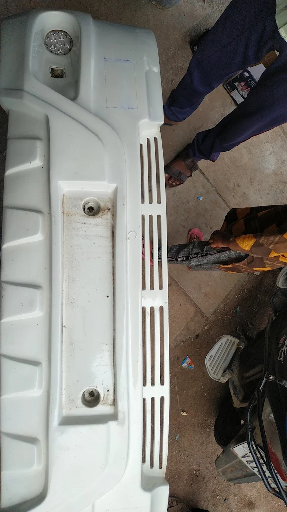
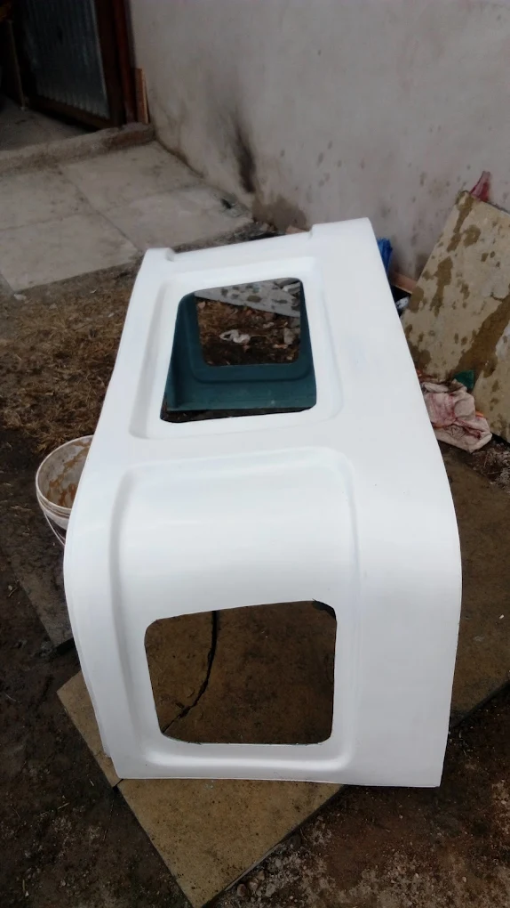
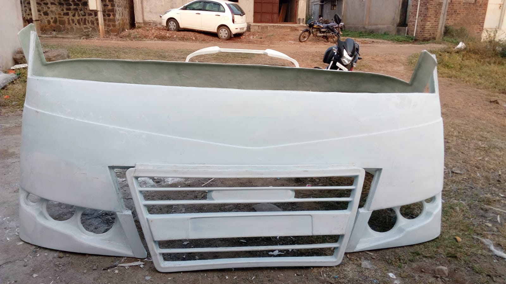
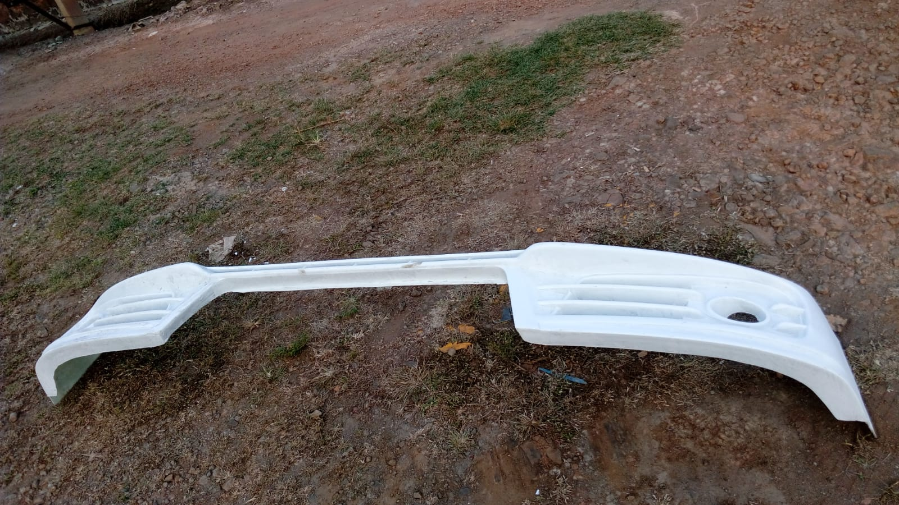
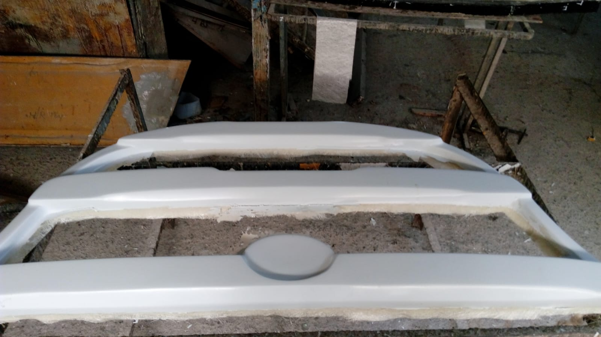
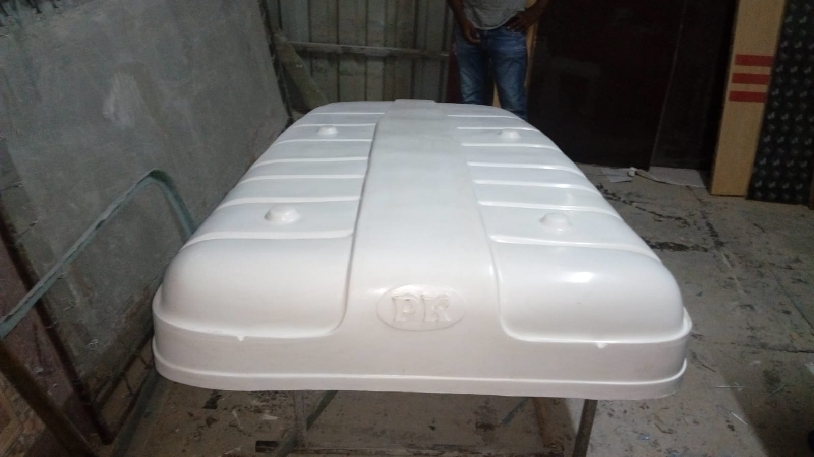
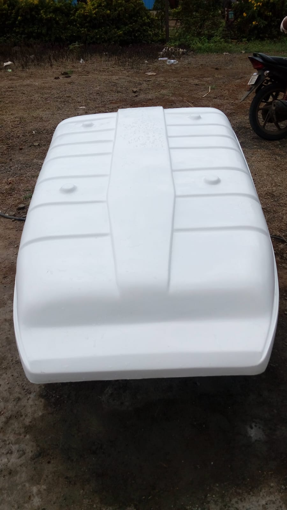
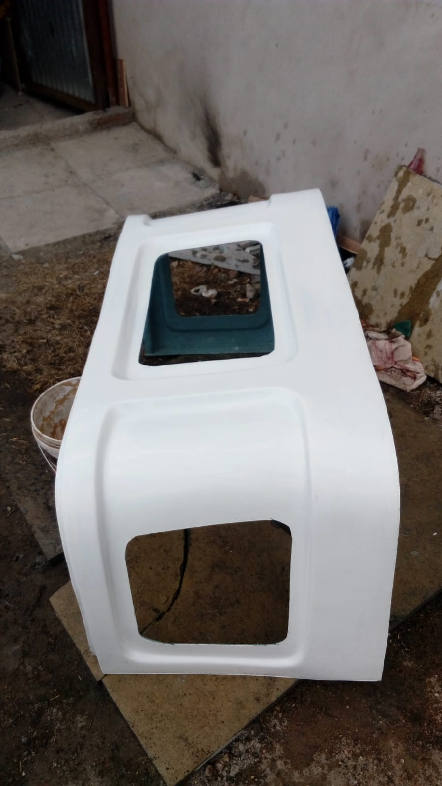
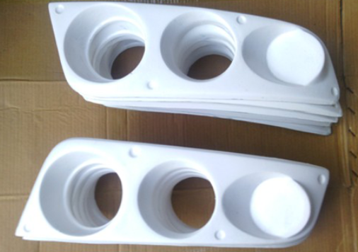

FRP Automotive Parts
At Sifan Fibrotech, we manufacture high-quality FRP Automotive Parts designed to deliver strength, durability, and reliable performance for modern vehicles. Using advanced Fiber Reinforced Plastic (FRP) technology, our automotive components are built to be lightweight yet strong, making them an ideal choice for various automotive applications.
FRP materials are widely used in the automotive industry because they provide excellent structural strength while significantly reducing overall weight. Compared to traditional materials such as metal, FRP components are resistant to corrosion, weather damage, and chemicals. This makes them suitable for vehicles that operate in demanding environments where durability and long-term reliability are essential.
Our FRP automotive parts are manufactured with precision and high-quality materials to ensure they meet the needs of modern automotive systems. These components help improve vehicle efficiency, reduce maintenance requirements, and enhance overall performance.
Key Features of FRP Automotive Parts
Our FRP automotive products are designed to provide both performance and reliability. Some of the major advantages include:
- Lightweight Construction: FRP parts reduce vehicle weight, which helps improve fuel efficiency and performance.
- High Strength: Fiber reinforcement provides strong structural support while maintaining flexibility.Corrosion Resistance, Unlike metal components, FRP parts do not rust or corrode when exposed to moisture or chemicals.
- Impact Resistance: FRP materials are capable of absorbing impact, reducing the risk of damage.
- Long Service Life: Durable materials ensure long-lasting performance with minimal maintenance.
- Weather Resistance: FRP components perform well in extreme weather conditions, including heat, humidity, and sunlight.
- Corrosion Resistance: Unlike metal components, FRP parts do not rust or corrode when exposed to moisture or chemicals.
These features make FRP an increasingly preferred material for modern automotive manufacturing and component design.
Applications in Automotive Industry
FRP automotive components can be used in a wide variety of vehicle parts and structural elements. Some common applications include:
- Vehicle Body Panels: Lightweight and durable panels used in cars, buses, and commercial vehicles.
- Protective Covers and Enclosures: Strong covers used to protect mechanical and electrical components.
- Interior and Exterior Components: Decorative and structural parts used inside and outside the vehicle.
- Industrial Vehicle Parts: Components used in trucks, utility vehicles, and heavy-duty transportation systems.
Because of their strength and lightweight nature, FRP parts help improve vehicle efficiency, durability, and design flexibility.
Custom Automotive Component Manufacturing
At Sifan Fibrotech, we understand that different vehicles require different component specifications. That’s why we offer custom FRP automotive parts tailored to specific industry requirements.
Our customization options include:
- Custom shapes and dimensions
- Different thickness and strength levels
- Special finishes and coatings
- Components designed for specific vehicle applications
Our team works closely with clients to ensure every part is manufactured with precision, quality, and performance in mind.
With a strong focus on quality manufacturing and advanced materials, Sifan Fibrotech delivers FRP automotive components that meet the demands of modern transportation systems. Our products combine lightweight design, structural strength, and long-term durability, making them a reliable choice for automotive manufacturers and industrial vehicle applications.










Contact Us
Get In Touch
We are available for consultations and project quotes. Visit our facility or contact us directly.
Sifan Fibrotech,
Babaleshwar, Vijayapura, Karnataka 586113,
+91 9900645310 | +91 9623833304
sifanfibrotechbbl@gmail.com